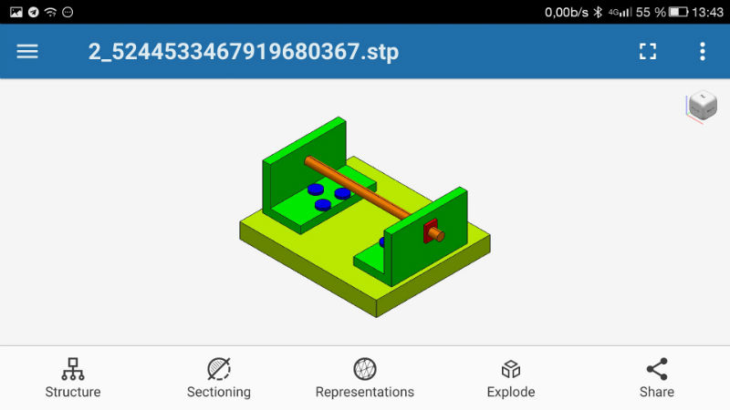

Brief introduction
The CAD Exchanger SDK visualization component enables creation of highly-interactive high-performance 3D CAD/CAE applications.
The visualization component provides efficient API to create scene graph from the SDK data objects (such as ModelData_Model, sub-assemblies or individual parts, B-Rep bodies and shapes, and polygonal meshes). In addition, scene graph nodes can be created directly from user-defined data.
The visualization component provides integration with different technologies, platforms and programming languages. The component architecture allows to integrate with other back-ends and front-ends while keeping the user’s code virtually unchanged and really cross-platform.
When designing the visualization component we have analyzed more than a dozen of leading visualization libraries, both CAD-tailored and generic, including OpenSceneGraph, Open Inventor/Coin3D, Qt 3D, three.js, VTK, and carefully picked up key principles to design a solution that would be most efficient for CAD (as well as CAM/CAE) applications.
CAD Exchanger SDK with its visualization component is used underneath CAD Exchanger GUI, CAD Exchanger Cloud as well as various applications we developed for our customers within custom development services.
Benefits
Technical:
- Support of various front-ends (such as QtQuick/QML, Qt/Widgets, WPF, Windows Forms, etc). Integration-ready for various back-ends (Open Scene Graph, VTK, etc) in addition current implementation.
- Scene graph concept that naturally maps to CAD data types.
- Reduced and easy to maintain user-specific code thanks to using high-level platform-independent API.
- Seamless integration with CAD Exchanger SDK data model objects (including assemblies and parts, B-Rep’s and meshes) as well as support of user-specific data.
- High-performance including leveraging of multi-threading.
- Reduced memory footprint thanks to sharing heavy-weight data (e.g. geometrical definition of parts instanced multiple times in an assembly).
- Coexistence with user’s legacy OpenGL-based 3D views.
Business / non-technical:
- Reduced development time thanks to multiple ready-to-use features (view and camera manipulation, dynamic selection, display modes, etc).
- Creating great user experience (smooth transitions in 3D view, custom visual settings, highly responsive UI due to asynchronous display).
- Secured investments and reduced future migration costs when switching to other front-ends or programming languages.
Supported technologies
Out of the box, the visualization component supports the following programming languages and technologies:
- C++ with QtQuick/QML (Qt version 5.12 or higher);
- C# with WPF (Windows Presentation Foundation 4.5 or higher) and Windows Forms (.NET Framework 4.7 or higher);
- Javascript with three.js.
The following technologies can be enabled upon request:
- C++ with Qt/Widgets;
- Java (on desktop or Android);
- C++ with Open Scene Graph;
- C++ with VTK;
- Other OpenGL, OpenGL-ES, DirectX, WebGL-based platforms.
Please contact us at support@cadexchanger.com for your specific case. The following screenshots demonstrate applications based on CAD Exchanger SDK using different platforms:
QtQuick/QML-based application: CAD Exchanger GUI (Windows, Linux, MacOS)

QtQuick/QML-based application: CAD Exchanger GUI (Android)
C#/WPF-based application: Sample from CAD Exchanger SDK
Javascript/three.js-based application: CAD Exchanger Cloud